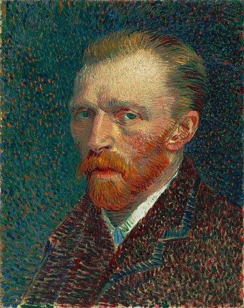
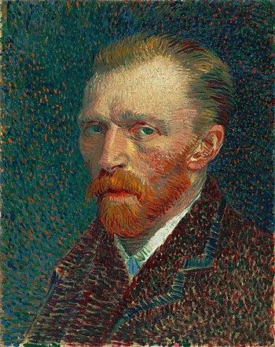
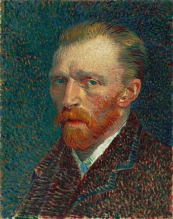
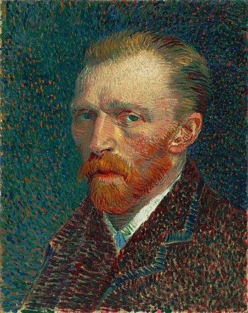
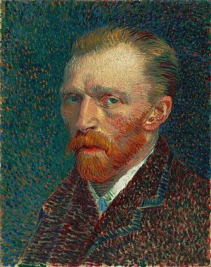

Main
Company
Van Gogh
Paintings
Log In
Vincent van Gogh Museum
최근 글
빈센트 반 고흐...
반 고흐 침실에 대...
별이 빛나는 밤은...
경 과제 끝 축
다양한 정보를...
인기 글
명화 모음집...
반 고흐 생애...
별이 빛나는 밤...
빨리 토요일이...
왔으면 좋겠다...

작품 목록
1885 Poplars near Nuenen
1885 Still Life with Bible
1887 Self-Portrait
1889 Portrait of Joseph Roulin
1889 The Starry Night
 

 
